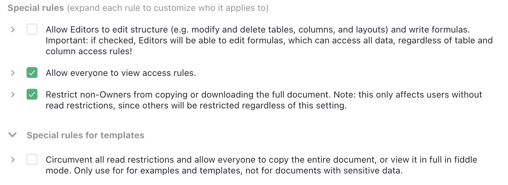

Access rules#
Every Grist document can be shared with others using the ‘Manage Users’ option in the sharing menu (). Users can be invited as Viewers, Editors, or Owners (see Sharing a document for a refresher on those roles), or a document can be shared publicly with view or edit permissions. Sometimes, you need more nuance about who can see or edit individual parts of a document. Access rules give us that power.
Only the owners of a document can edit its access rules. When a document is loaded, owners see a tool called in the left side bar. Click on that to view and edit access rules. The rules are also accessible via the ‘Manage Users’ option of the sharing menu with the ‘Open Access Rules’ button (available only to document Owners).
Suppose we run a small business sourcing and delivering unusual objects,
organized using a document with two tables, Orders and Financials.
Now we are taking on more employees, and want to share the document with them while
limiting their access to just what they need.

Enabling access rules#
With access rules disabled, every collaborator on a document can see all its data, and every Editor or Owner may change anything about the document’s data, structure, logic, or layout. In other words, Owners and Editors are equally powerful within a document, with the ability to create or delete tables or columns, write formulas, reorganize pages, and so on.
Enabling access rules allows only Owners to change the document’s structure, and denies this permission to Editors.
Click ‘Enable Access Rules’ to add access rules to your document:

Next, you’ll see a dialog with an explanation of what will change: Editors will no longer be able to change structure or edit formulas, and only Owners will be able to copy or download the document. Once you click ‘Continue’, you’ll see the configuration for granular access rules.

Note: the enabled ‘Save’ button on top means that changes (in this case the enabling of access rules) have not been applied! Click ‘Save’ for them to take effect.
Disabling access rules#
All rules must be manually deleted to disable access rules.
To revert a document back to its default state, click the ‘Disable Access Rules’ button at the bottom of the page. If you don’t see one, delete all other rules you see using the trash icon (). The “Disable Access Rules” button will appear once there are no deletable rules.

Default rules#
To enable and view the access rules for a document, visit its access rules page by clicking in the left sidebar. When rules are enabled but no custom rules have been created yet, the access rules page contains the ‘Default Rules’ for our document:

These rules say, in summary, that Owners and Editors can do anything within the document, that Viewers can only read the document, and everyone else is forbidden all access. These rules cannot be modified since they reflect the underlying enforcement of basic roles.
However, other rules can be added above them to restrict access in more granular ways, using the “+” button circled in the above screenshot. Default rules in this section are used as the fallback for all tables.
To understand whether a group of rules allows a certain permission (Read, Update, Create, or Delete), read the rules from top to bottom, and find the first applicable rule that allows (green) or denies (red) that permission. We’ll see plenty of examples as we go.
Make a private table#
To ensure that only Owners can access a table, such as the Financials table in our example,
we click ‘Add Table Rules’ and select the table name, Financials. This creates a new empty
group of rules called “Rules for table Financials”.
Then we add a condition for any user who is not an Owner (user.Access != OWNER), with all
permissions denied. Selecting ‘Deny all’ from the drop-down beside R U C D is a fast
way to set all permissions to denied, or you can click each permission individually to turn
them red. R is Read, U is Update, C is Create, and D is Delete
(see Access rule permissions).
Once you are done, click ‘Save’.

Now we could go ahead and share the document with a team member
specialized in deliveries, for example. We share the
document with them as an Editor so that the restrictions
we’ve set up apply to them. They won’t see the Financials table in the
left side bar, and attempts to open it will be denied:

Basic conditions#
Access rules are applied in a particular order:
- Column-specific rules (see Restrict access to columns)
- Table-wide rules
- Default rules
As soon as we have a definitive answer (Allow or Deny), further rules are not checked.
For any group of rule conditions, they are checked top to bottom. A last empty condition (shown
as “Everyone Else” in the interface) always matches. If you insert a custom condition with the single
keyword True, it will also always match.
It’s common to use conditions based on the user’s access level to the document, for example:
user.Access == EDITOR– checks if the user has Editor-level access to the document.user.Access != OWNER– checks if the user does not have Owner-level access.user.Access in [VIEWER, EDITOR]– checks if the user has Viewer or Editor access.user.Access not in [EDITOR, OWNER]– checks if the user has neither Editor nor Owner access.
Seed rules#
When writing access rules for specific tables, it is fairly common to repeat the same rule across many tables —
for example, always grant owners full read and write permissions. To automatically add a set of rules to all
new table rules, you can write “seed rules.” There is a checkbox above default rules that makes the common
case easier with one click. Click it to write a seed rule that will automatically grant owners full access
whenever table rules are added. Click the > icon to uncollapse the seed rules table to modify seed rules.

Special rules#
Below ‘Default Rules’, you’ll find several checkboxes that control document behavior outside of viewing and editing data.
Each special rule has a checkbox to toggle it, and also an expander (>) that shows the complete
conditions that implement each special rule. The conditions may be edited if you’d like to toggle
behavior for particular subsets of users (e.g. determined using
user attributes).
Allow Editors to edit structure#
This rule restores the default behavior of a document without access rules. In fact, when this is the only checked rule (and there are no table rules), it’s equivalent to disabling access rules altogether.
This rule controls a document-wide permission called the “structure permission”, represented by
S if you expand it:

Important: The structure permission (S) is very powerful, as it allows for creating or changing
formulas. Since formula calculations are not limited by access rules, a determined user
could use them to retrieve any data from a document. In other words, having the structure
permission makes it possible to circumvent other rules that prevent access to data.
Allow everyone to view access rules#
By default, only Owners may view access rules. This rule allows every collaborator to view them. (It cannot allow non-Owners to change access rules, only view.)

Restrict non-Owners from copying or downloading the full document#
This rule appears only if you allow non-Owners to view access rules.
By default, only Owners may copy a document or download it in full. Such copies and downloads include the document’s access rules, and so would make the rules visible to the new owner of the copy. For this reason, the permission to view access rules is a prerequisite to full copies.
If you allow others to view access rules, then you may have non-Owners with complete access to all data. To avoid surprises, such users are still restricted from copying or downloading, but you can remove this restriction.
Note that users who do not have complete read access to all document data will still be unable to copy or download the full document.
Special rules for templates#
Hidden under another > expander is a special rule that’s only useful for non-sensitive
templates and examples: to allow users with restrictions to copy or download the document.
It addresses a particular problem: how do you demonstrate a template with restrictive access rules, and share it with someone without making them an owner? A template by definition involves copying the document, which is prohibited to anyone without full access. This rule exists to circumvent read restrictions just for this purpose.
Note that when you make a copy of a document with this special rule, the special rule itself is not copied: the new copy will not have it on.
Restrict access to columns#
We can restrict a collaborator’s access to columns. In our eample, we might
wish to give a delivery specialist more limited access to
the Orders table. Perhaps they don’t need to see an Email column,
or a Piece column with details of what is in the parcel.
Click ‘Add table rules’ and select ‘Orders’ to create a rule group for the Orders table.
Now, in the ‘Rules for table Orders’ group, click the three-dot icon (…), and
select ‘Add Column Rule’:

In the ‘COLUMNS’ column we have a new ‘[Add Column]’ dropdown to add all the columns
to which we want the rule to apply (in our case Email and Piece).
For the condition, we could use user.Email == 'kiwi@getgrist.com'. This checks
for the email address of Kimberly, our fictional delivery specialist; we
could also check by name or a numeric ID. We turn all available permissions off for
this user on these columns:

Now that the rules are ready, click ‘Save’.
If we have another employee who specializes in sourcing objects, and who needs to see a different set of columns, we can do that. For example here we add a rule to withhold Address and Phone columns from user Charon:

View as another user#
A convenient way to check if access rules work as expected is with the ‘View As’ feature, available in the ‘View As’ dropdown. This allows an Owner to open the document as if they were one of the people it is shared with, to see what their colleague would see. The Owner does not “become” that colleague - any changes they make will be recorded as coming from themselves and not the colleague - but they do see the document from the colleague’s perspective.

In our example, we could select Kiwi, and the
document reopens, with a large banner stating that we are viewing it
as Kiwi. The Piece and Email columns are missing,
and the Financials table is surpressed:

You can also check in ‘Raw Data’ to confirm only the expected tables, columns, and rows are exposed.

When satisfied that everything looks as expected, we click the green ‘View as Yourself’ button to close this preview, and the document will reload.
User attribute tables#
If we are successful and hire many sourcing and delivery people,
then adding them one by one to rules would be tedious. One solution
is to use “user attribute tables.” You can add a table to your document
that classifies users as you like, and then use those classes in your
access rules. For example, we can make a table called Team, and give it two
columns, Email and Role, where Role is a choice between
“Sourcing” and “Delivery”.

Now we can tell Grist to make information from this table available
for access rules, by clicking on ‘Add User Attributes’.
Give the attribute any name you like (this will be how we refer to it
in formulas), such as Team. Pick the table to read (Team also in
this case). Give a user property to match against
rows in this table - in our case we’ll use user.Email. And the
column to match against, Email.

Save that. Now we can update our rules to be more general. We find with
autocomplete that we have a new user.Team variable available in
condtions. It makes columns from the Team available, such as user.Team.Role.
Now we can check if the user has a particular role, and apply the permissions
that go with that:

Great! Doing a spot check, Charon sees the expected columns for someone in
Sourcing. And if we recruit someone else to work with them, we can just add
them in the Team table, no rule changes needed.

Row-level access control#
In our example, as orders are processed, they move from sourcing to delivery phases. So there’s really no need for the two groups to see all the orders at once. Let’s add a column called Stage that can be set to “Sourcing” or “Delivery”, so that we can update access rules to show only the relevant orders.

In the ‘Rules for table Orders’ group, click the three-dot icon (…), and
select ‘Add table-wide rule’ to add a rule that isn’t limited to specific columns.
Let’s deny access to all rows for non-Owners as a starting point, then add back in the
ones we want. We can do that with the condition user.Access != OWNER with
‘Deny All’ permissions. Then, we add another default rule by clicking +, and
add the condition user.Team.Role == rec.Stage. The rec variable allows
us to express rules that depend on the content within a particular record.
Here, we check if the Stage column of a record matches the user’s role.
If it is, we allow R Read access:

Here’s how the table looks now as Kimberly (doing deliveries):

And here’s how the table looks as Charon (doing sourcing):

Kimberly and Charon now have read-only access to the table. Owners still have full write access to all rows and columns.
Using references in conditions#
In conditions, the rec variable gives access to all the fields in the current record, but
not to any records referred to by references. In other words, the dot notation
lookups supported by normal formulas
(such as $Person.Email or rec.Person.Email) are not supported in access rule conditions.
Instead, a reference value is a numerical ID of the referenced record.
You may still use such records in comparisons:
-
Example 1. Let’s imagine that table
Ordershas a column Purchaser that’s a reference to theTeamtable and represents a person who placed the order. And let’s say you have a user attributeuser.Team, configured as above.Let’s say you want to allow only the purchaser to update certain fields. Then you may compare the value in the record with the user using the condition
rec.Purchaser == user.Team.id. Here,rec.Purchaseris a numeric identifier of a record in tableTeam, whileuser.Teamis such a record, anduser.Team.idis its identifier (using the built-inidfield). -
Example 2. Let’s say now that both tables
OrdersandTeameach have a column named Department, which is a reference to theDepartmentstable.Let’s say you want to only allow any person to view only the orders associated with the department they are in. You can compare the value in the record with the user’s department using this condition:
rec.Department == user.Team.Department.Here, both
rec.Departmentanduser.Team.Departmentare numeric identifiers of records in tableDepartments.
When this isn’t enough, you can also use normal formulas in your actual table to bring in
referenced data as additional columns. E.g. if you add a column in table Orders named “Role”
with the formula $Purchaser.Role, then you could use rec.Role in rule conditions for table
Orders.
Understanding reference columns in access rules
References offer a good way to limit the access of team members to rows pertinent to their work. One way to do so is to relate all records in all tables to their respective team members. For example, leads and sales records can reference the sales rep responsible for those records. This quick video explains how.
Checking new values#
Access rules can be used to permit only certain changes to the document.
Suppose we want delivery people
to be able to change Stage from “Delivery” to “Done”, without giving them the
arbitrary rights to edit that column. We can grant them that exceptional right
as follows.
In the ‘Rules for table Orders’ group, click the three-dot icon (…), and
select ‘Add column rule’. Set ‘[Add Column]’ to Stage, and mark the U/Update
permission to be granted. For the condition, use this:
(user.Team.Role == 'Delivery' and
rec.Stage == 'Delivery' and
newRec.Stage == 'Done')
This checks if the user has the delivery role, and the record is in the delivery stage,
and that the user is trying to change Stage to “Done”. The newRec variable is a
variant of rec available when the user is proposing to change a record, with rec
containing its state before the change, and newRec its state after the proposed change.

Now, if we view the table as Kiwi, and try to change Stage to “Sourcing”, we are denied:

If we change Stage to “Done”, it works, and the record disappears from view since it is no longer in the delivery stage:

Link keys#
Sometimes it is useful to give access to a specific small
slice of the document, for example a single row of a table. Grist offers
a feature called “link keys” that can help with that. Any parameters in
a Grist document URL that end in an underscore are made available to
access rules in a user.LinkKey variable. So for example if a document
URL ends in ....?Token_=xx-xx-xx-xx&Flavor_=vanilla, then user.LinkKey.Token
will be set to xx-xx-xx-xx and user.LinkKey.Flavor to vanilla.
Let’s work through an example to see how that can be helpful.
Suppose we have a table of Orders and we’d like to occasionally
share information about a single order with someone. To do that with
link keys, we need some kind of hard-to-guess code for each order,
which can be used to access it. Grist has a UUID() function that
gives a unique, random, and hard-to-guess identifier, so let’s add a UUID column with
formula =UUID():

In fact we want UUID() to be called just once per order, when we create
it, and never recomputed (because then it would change). So in the right sidebar
we convert the formula column to a data column, freezing its values:

This converts our formula to a trigger formula. We set the formula to apply to new records:

At this point we have a solid hard-to-guess code for each order in the
UUID column, that will be created as we add new orders. It can
be handy at this point to construct links to the document with that
code embedded in them. Grist has a helper for this called
SELF_HYPERLINK. To add a
link key called <NAME>, just use this function with a
LinkKey_<NAME> argument. In our case, we pass LinkKey_UUID=$UUID to
embed the value of the UUID column into the URL. We also set label=$Ref
to control the text label of the link in the spreadsheet. To show the link,
we set the column type to ‘Text’ and set the ‘HyperLink’ option:

Once we have these links, we can tidy up a little by hiding the UUID and Ref columns (see Column operations for a refresher on how to do this):

The links don’t do anything special yet, but we have everything we need to make that happen now. Here is an example of access rules to allow anyone with a UUID in their URL to read any order with a matching UUID (otherwise only Owners can read orders in this case):

And here is what a non-Owner now sees, with the UUID of the first order in their URL:

This is just the beginning of the possibilities. Link keys can give access to multiple rows across many tables. They can be used in User attribute tables. And the data they give access to can be within tables, cards, card lists, charts, and custom widgets.
Check out another example to deepen your understanding of link keys even more.
Access rule conditions#
Access rule conditions contain a formula expressing when the rule should apply. A blank condition will always apply. When a condition applies for an action, the permissions associated with the condition are set to allowed or denied for that action if no earlier rule in the same group has yet set them. When a condition does not apply, no permissions are set by that rule, but other rules could set them.
Formulas are written in a restricted subset of Python.
Variables that may be available in access rules are user, rec, and newRec.
The user variable contains the following members:
user.Access: one ofOWNER,EDITOR, orVIEWER, giving how the document was shared with the user (see Sharing a document).user.Email: the email address of the user (oranon@getgrist.comfor users who are not logged in).user.UserID: a numeric ID that is associated with the user.user.Name: the user’s name (orAnonymousif unavailable). Note that users may change the name on their account.user.LinkKey: an object with any access control URL parameters. Access control URL parameters end in an underscore (which is then stripped). Only available in the web client, not the API.user.SessionID: a unique string assigned to anonymous users for the duration of that user’s session. For logged in users,user.SessionIDis always"u"+ the user’s numeric id.user.IsLoggedIn: a boolean for whether a user is signed in or anonymous.
For an example of using the user variable, read Default rules.
The rec variable contains the state of an individual record/row, for
conditions that need to take that into account. When it is used, that
rule becomes row-specific. That allows, for example, to make certain
rows visible only to certain users, or to prohibit modification of
certain rows by certain users.
For an example of using the rec variable, read Row-level access control.
The newRec variable is available for record/row creation and
updating, and contains the state of a row after a proposed change,
allowing you to selectively allow or deny certain changes.
For an example of using the newRec variable, read Checking new values.
Supported operations in condition formalas are currently: and, or,
+, -, *, /, %, ==, !=, <, <=, >, >=, is, is
not, in, not in. Supported variables are: user, rec,
newRec with their members accessed with .. Strings, numbers, and
lists are also supported. If an operation you need is not available,
consider whether you can do part of the work in a formula in the table
itself (see Access rule memos for an example).
Comments are allowed, using # or """. If there is a comment in a
rule, then the first comment in a rule that results in a denial of an
action will be reported to the user as a tip for why the action was not
permitted. See Access rule memos for an example.
Access rule permissions#
A permission controls whether a user can perform a particalar kind of action. Grist access rules currently deal with 5 kinds of action, which are given single letter acronyms for convenience:
R- permission to read cells.U- permission to update cells.C- permission to create rows.D- permission to delete rows.S- permission to change table structure.
The S structure permission is available only in the special rule to edit structure
(see Structure edit).
Column rules lack the C create and D delete permissions,
which should be handled in default table rules.
Access rule memos#
When a user receives an error message denying them access because of a rule, it can be helpful to give specific details that will help them understand the problem. You can do this by adding a memo for the condition. First, click the memo icon to the right of your condition.

Type the error message you wish to display into the entry box. Be sure to save your changes.

When the rule blocks a user from performing an action, the memo will appear as a notification.

For an explanation of how this particular access rule works, see Access Rules to Restrict Duplicate Records
Access rule examples#
Along with the extended example of using access rules in this section, we will collect complete examples of access rule templates and guides here.
- Lead lists: A very simple list of leads, assigned to individuals to follow up, with control of assignments reserved for document owners.
- Account-based Sales Team: Sales CRM with deals and contacts assigned to sales reps. Reps can only see their own contacts and deals, but managers can see everything.
- Public Giveaway: A public giveaway organizer that uses access rules to enforce giveaway rules without requiring claimants to log into Grist.
- Simple Poll: A simple poll managed in Grist with access rules to limit one response per visitor.
- Crowdsourced List: Publicly crowdsourced list with access rules to empower moderators to edit almost anything, but limit visitors to only making and editing their own contributions.
- Time Sheets: Template to capture contractor timesheets. Access rules permit contractors to view only their historical time sheets, and edit only the active month.
- Project Management: Track tasks by event and flag tasks at risk. Access rules limit permissions by department, and expand managers’ permissions.